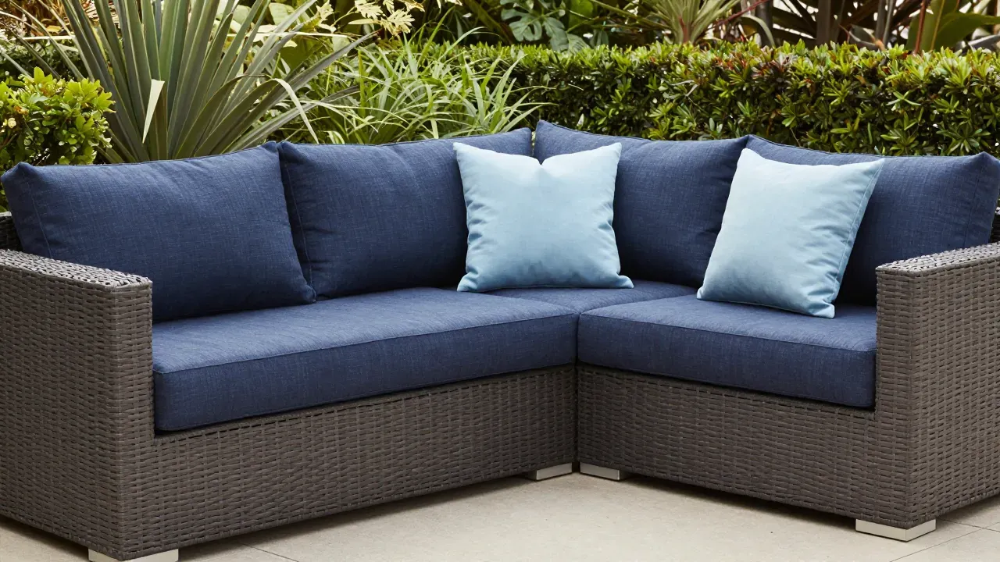
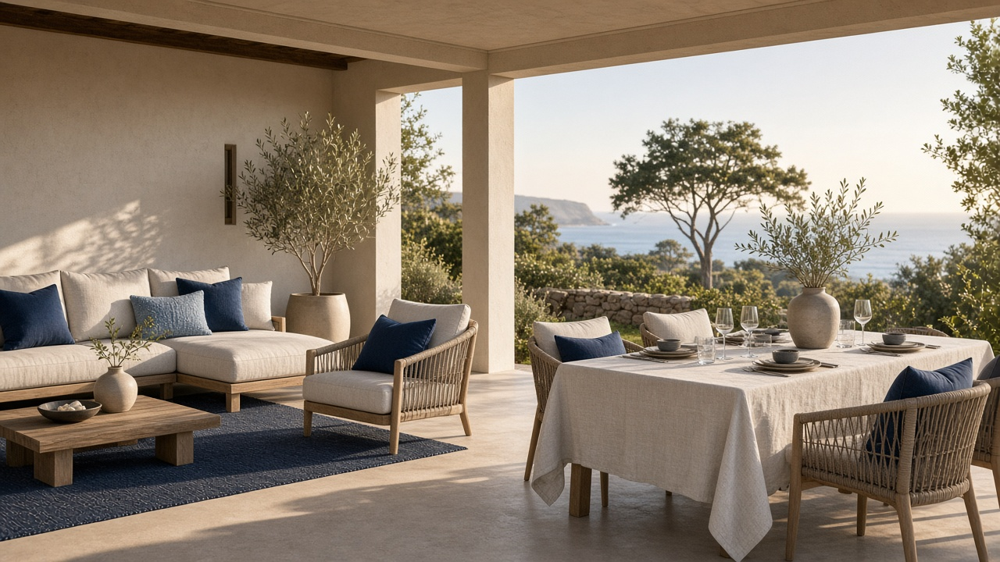
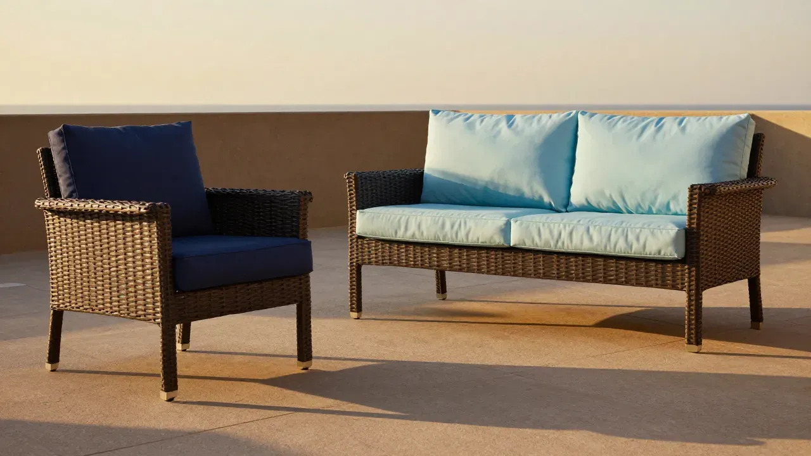
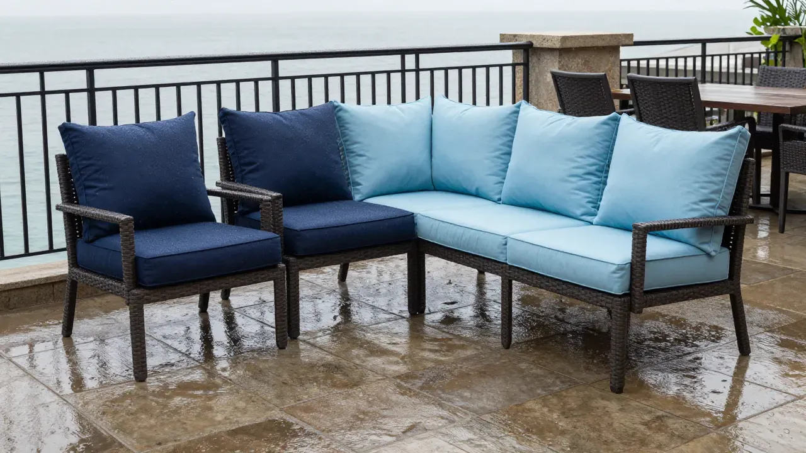

Direct-Fit OEM
Factory footprints, contours, and breaks
Invisible luxury
Beauty in outdoor cushioning is the visible consequence of a correctly specified core, cut, and cover. Cloud Dry is the luxury the guest never names — a recovering crown, square boxing, and a welt that still tracks true.

| Attribute | Cloud Dry system — pass | Commodity batting — fail |
|---|---|---|
| Silhouette | Plush recovery profile under dining and lounge load cycles | Center collapse; deflated sit after weeks of use |
| Loft retention | Engineered rebound from Cloud Dry / HR cellular cores | Progressive packing; flat fiber-slab feel |
| Edge crispness | CNC ±0.125" boxed edges; square corners under cover | Rounded perimeter; fill migration at boxing |
| Cover hand | Solution-dyed acrylic; dry, premium hand after wet/dry | Heavy wet-sandwich; clammy residual moisture |
| Welt continuity | Self-welt tracks true; PTFE holds color under UV | Wavy welt; chalked or failed outdoor thread |
| After rain | Through-drainage; silhouette returns as water clears | Prolonged dark patches; lasting loft loss |
Retail and commercial programs share the same cores and cut tickets. Keep naming consistent: Cloud Dry for the reticulated outdoor core; The Cushion Store for the storefront and OEM catalog.

Fabrication
Cores are cut on CNC oscillating-blade systems configured for outdoor cushion geometry. Commodity bandsaw programs typically hold ±0.50". The Cushion Store holds ±0.125".
| Capability | The Cushion Store | Commodity baseline |
|---|---|---|
| Cut tolerance | ±0.125" CNC oscillating-blade | Typically ±0.50" hand / bandsaw slab |
| Waterfall front | CNC-rolled continuous seat-to-bullnose | Square-cut or hand-rolled; inconsistent radius |
| Hinge routes | Precision fold routes for chaise and multi-section pads | Hand-cut kerfs; variable depth |
| Drainage scrim | Interior scrim compatible with Cloud Dry pore path and mesh underliners | Often omitted or blocked by dense batting wrap |
| Corner geometry | Custom CNC corner packs from survey templates | Approximate fits; OEM warns non-exact vs factory cushions |
| Traceability | Cut ticket retains OEM code, ILD target, foam lot, COM lot | Variable |


94 OEM drop-in SKUs
Search by Model, OEM line, or brand. Filter dining, deep seat, chaise, ottoman, pillow, bench, and specialty. Every dimension and COM yield is from the customer brief.